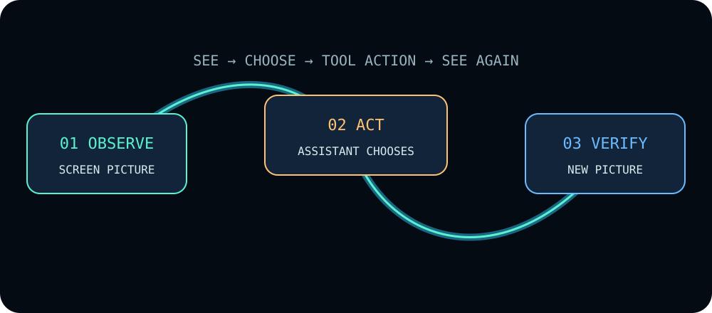

Give the assistant
hands on your desktop.
Screen pictures, mouse, keyboard, shell, and skills. You and the assistant work with the same desktop.
ruvnet/ruos ↗ruOS gives an assistant a real computer for research, writing, code, and the clicks in between. You can watch the same screen and take over.
An independent explainer for rUv (ruvnet)'s ruos — built to take you from "never seen it" to "ready to implement".
An assistant is useful until the work leaves the chat. A setup window appears. A button needs a click. A screen must be checked. The words are done, but the task is not.
Picture asking for research, a draft, or a code fix. The assistant can prepare the answer, but a window still needs a click or the screen still needs a check. You become its hands at the exact moment the work matters.
ruOS is a full Linux desktop on a Google Cloud machine. People can view it through a browser, iPad viewer, or native Mac viewer. An assistant can enter through a separate secure login and operate that same desktop.
The public project supplies the controls and add-ons. You bring a running Linux desktop. It has real windows and apps, like a computer under your desk.
An assistant can press a button, but a click alone does not tell it what happened. A fresh screen picture lets it choose the next step.
The same controls work across desktop apps: see, click, type, then see again. The assistant still has to judge what to do.
See the result before deciding what comes next.
Two paths reach the same Linux desktop: a viewer for you, and a remote login for the assistant.
The assistant starts ruos-mcp over SSH (an encrypted remote login). This Rust program exposes 16 tools for screen, mouse, keyboard, shell, and system tasks.
ruos-mcp adds no listening network socket. The SSH account can run unrestricted commands; trust that account.
The public repo contains control code and skills. Hosted signup and separate customer desktops remain roadmap work.
System tools need a separate local executor. Its display-resolution endpoint is proposed. Read the source and limits.
Then the screen has to answer. Follow the loop that turns an instruction into a result the assistant can check.

An illustrated loop. Choose a step below to follow it.
A fresh screen picture tells the assistant what is on the desktop. It chooses what to do next.
screenshotInteractive illustration, not a connection to a live desktop. The assistant chooses the action; ruos-mcp supplies the control tools.
Two repositories share the ruOS name, with different scopes. This explainer and its AI pack focus on ruvnet/ruos.
Screen pictures, mouse, keyboard, shell, and skills. You and the assistant work with the same desktop.
ruvnet/ruos ↗Local reasoning, memory, GPU profiles, health checks, training, and package updates. A broader system built around ruVultra.
cognitum-one/ruOS ↗More scope is clear; greater reliability is not yet established. Cognitum publishes Debian packages, but its latest amd64 and arm64 builds failed on September 16, 2026 because the build expects machine-specific paths. The install test was skipped. We have not installed those packages or tested GPU, training, or recovery behavior.
Checked September 18, 2026 against source 576dc8c. Build evidence ↗ · Published packages ↗
Read the visual review and testing limits ↗
These are the paths the repo documents. The public control server's captured handshake proves its 16-tool surface; a successful remote graphical task still depends on a reachable desktop and its local tools.
Some installers only offer a graphical dialog. The control server exposes mouse, keyboard, wait, and screenshot actions for that path. The repo's handshake proves the tools are listed; it does not prove a remote installer run on its own.
A complex task can be handed to a swarm instead of one assistant. The skills describe a topology — a plan for how agents split and check work — plus a limit on how many agents join.
The skills also describe memory that can store a decision or pattern. A later session can search by meaning and reuse it, rather than starting from zero.
Start with a local check. You need Git, Rust with Cargo, and Bash or Zsh. This proves the control program runs; connecting a live Linux desktop is a separate step.
git clone \
https://github.com/ruvnet/ruos
cd ruos/mcp
cargo build --release
init='{"jsonrpc":"2.0",'
init+='"id":1,'
init+='"method":"initialize",'
init+='"params":{'
init+='"protocolVersion":'
init+='"2025-06-18"}}'
list='{"jsonrpc":"2.0",'
list+='"id":2,'
list+='"method":"tools/list"}'
printf '%s\n' "$init" "$list" |
./target/release/ruos-mcpruos-mcp, version 0.1.0, and 16 tools returned. These are fields from the actual replies. Remote screen control is a separate test.Keep the guide and its sources together. Read the primer yourself, or let your assistant search the same source material.